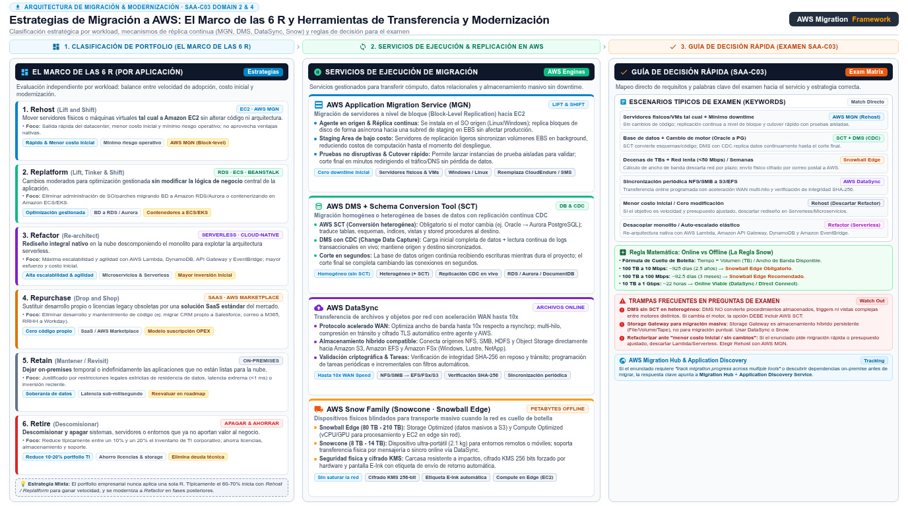

Migración: DMS, MGN y Snow Family AWS Database Migration Service · AWS Application Migration Service · AWS Snow Family
Del datacenter propio a AWS con el mínimo downtime: qué servicio mueve qué cosa, y cuándo la carretera —la red— obliga a contratar el camión físico.
Una migración a AWS es una mudanza con tres tipos de empresa de transporte. AWS DMS embala y traslada los muebles valiosos —los datos— mientras la familia sigue viviendo en la casa vieja: la réplica continua mantiene ambas casas sincronizadas hasta el día del corte, que dura minutos. AWS MGN es la mudanza integral: traslada la casa entera tal cual está, con sus servidores y su lógica, y la reconstruye en EC2 sin rediseñar nada (lift-and-shift). Y Snow Family se contrata cuando la carretera entre ciudades es tan lenta —el enlace de red es el cuello de botella— que conviene un camión físico que se lleve todo de una vez. El examen reparte los tres servicios por esas mismas señales.
Cada decisión de migración se resuelve con tres variables: qué se mueve (¿solo datos, o servidores completos?), cuánto downtime tolera el corte final y qué ancho de banda real hay entre el datacenter y AWS. Sobre esas variables, el marco oficial de las 6 R decide el estilo de la migración de cada aplicación, y los servicios de esta página ejecutan el plan. La regla que más se repite en el examen es de costo-eficiencia: si no hay razón para rediseñar, rehost con MGN es la salida más rápida y barata; rediseñar (refactor) solo se justifica cuando la aplicación necesita algo que la nube da y el datacenter no.

Las 6 R: el mapa de toda estrategia de migración
El marco de las 6 R clasifica qué hacer con cada aplicación: rehost (subirla tal cual a EC2), replatform (cambios de fondo moderados, como mover la base de datos a RDS sin tocar el código), refactor (redisear para ser cloud-native, por ejemplo descomponer en microservicios y Lambda), repurchase (abandonar el producto propio y comprar SaaS), retire (apagar lo que ya no se usa) y retain (dejarlo on-premises, temporal o definitivamente). El portfolio rara vez elige una sola R: se mezclan, y por eso AWS ofrece un lugar central donde planificar y seguir cada aplicación.
Ese lugar era AWS Migration Hub, que orquestaba la migración y daba strategy recommendations por aplicación; la documentación oficial indica que Migration Hub cerró a nuevos clientes el 7 de noviembre de 2025 y que sus capacidades se absorbieron en AWS Transform, la marca actual para planificar, agilizar y orquestar migraciones y modernización. Para el examen, el concepto no cambia: un servicio central que recomienda estrategia por aplicación y consolida el estado del portfolio, mientras DMS, MGN y Snow ejecutan el traslado de cada pieza. Si el enunciado menciona "track migration progress across the portfolio", piensa en ese plano central.
AWS DMS: migrar datos con la casa habitada
AWS Database Migration Service migra bases de datos relacionales, data warehouses, NoSQL y otros data stores: hacia AWS, desde AWS o entre combinaciones de nube y on-premises. Su mecánica es simple: es un servidor de replicación que corre en la nube, al que le defines una conexión de origen, una de destino y una tarea programada que mueve los datos. La clave del examen está en el modo de la tarea: puede ser una migración puntual (one-time) o una replicación continua que mantiene origen y destino sincronizados —carga inicial más cambios posteriores— hasta el corte final con minutos de downtime. Antes de mover nada, DMS Fleet Advisor inventaría servidores, bases y esquemas del datacenter, y si el motor cambia, DMS Schema Conversion convierte los esquemas y el código almacenado al motor de destino (alternativamente, la herramienta descargable AWS SCT).
on-premises"] DMS["AWS DMS
instancia de replicacion"] TGT["Base de datos destino
RDS o Aurora"] SCT["DMS Schema Conversion
esquemas y codigo"] SRC -->|"carga inicial"| DMS SRC -.->|"cambios continuos"| DMS DMS --> TGT SCT -.-> TGT classDef navy fill:#EFF6FF,stroke:#3B82F6,stroke-width:2px,color:#1E293B classDef green fill:#F0FDF4,stroke:#10B981,stroke-width:2px,color:#1E293B classDef amber fill:#FFF7ED,stroke:#F59E0B,stroke-width:2px,color:#1E293B class SRC,TGT green class DMS navy class SCT amber
La distinción homogéneo/heterogéneo decide el esfuerzo del proyecto. En una migración homogénea (mismo motor: Oracle hacia RDS para Oracle, MySQL hacia Aurora MySQL) los tipos y el código son compatibles y DMS solo traslada datos. En una heterogénea (motor distinto: Oracle hacia Aurora PostgreSQL, SQL Server hacia RDS) el schema, los tipos de datos, los procedimientos almacenados y las vistas deben convertirse primero, y esa conversión es donde vive el riesgo del proyecto. El examen formula el heterogéneo con señales como "change the database engine" o "different engine"; la respuesta correcta siempre empareja DMS con Schema Conversion o SCT, nunca DMS solo.
| Aspecto | Homogeneous (mismo motor) | Heterogeneous (motor distinto) |
|---|---|---|
| Ejemplos típicos | Oracle on-premises → RDS para Oracle; MySQL → Aurora MySQL | Oracle → Aurora PostgreSQL; SQL Server → RDS para PostgreSQL |
| Conversión de esquemas | No necesaria: tipos y código compatibles | Obligatoria: DMS Schema Conversion o AWS SCT |
| Esfuerzo y riesgo | Bajo: el grueso es la réplica de datos | Alto: tipos, procedimientos y código almacenado a convertir |
| Señal en el enunciado | "same engine", "minimal effort" | "different engine", "change the database engine" |
AWS MGN: lift-and-shift de servidores completos
AWS Application Migration Service (MGN) es el servicio recomendado para el rehost: mover servidores físicos o virtuales tal cual a EC2 sin convertir la aplicación. Se instala un agente de replicación en cada servidor de origen y el servicio replica los bloques del disco de forma continua a un área de staging en AWS; antes del corte puedes lanzar instancias de prueba desde esa réplica para validar la aplicación, y el día del corte solo lanzas la instancia definitiva y cambias el DNS. El downtime se mide en minutos, la aplicación no se rediseña y el riesgo de conversión es mínimo — exactamente el paquete que describe un enunciado tipo "migrate 200 servers with minimal downtime and no changes to the application". La documentación actual renombró la experiencia hacia AWS Transform MGN, que añade análisis y modernización posterior, pero el mecanismo de replicación por bloques sigue siendo el corazón del servicio.
Snow Family: cuando la red es el cuello de botella
Hay mudanzas que no caben por la carretera de datos: mover decenas o cientos de TB por un enlace corporativo lento puede tomar semanas. Ahí entra la transferencia física: Snowball Edge son dispositivos robustos y portátiles —decenas de TB por unidad— que AWS te envía, cargas tus datos en local y devuelves por mensajería; Snowmobile es literalmente un semirremolque que traslada hasta 100 PB por dispositivo para migraciones de escala de exabytes. Ambos sirven tanto para importar datos a S3 como para exportarlos, y Snowball Edge además ejecuta computación en el borde cuando el dispositivo está desconectado. La señal de examen es aritmética pura: si el enunciado da volumen de datos, ancho de banda y plazo, y la red no da abasto, la respuesta es Snow; si la red da abasto o el flujo debe ser continuo, la respuesta es online (DataSync o transferencias directas).
¿Qué servicio para qué migración?
La tabla siguiente es el resumen que debes poder reconstruir de memoria: cada servicio de migración tiene un "para qué" único y el examen casi siempre ofrece tres de ellos como distractores. Fíjate en los verbos: migrar una base de datos → DMS; mover servidores completos → MGN; trasladar volúmenes masivos sin red → Snow; transferencias online programadas → DataSync. Si el enunciado habla de mantener sincronía hasta el corte, piensa primero en replicación continua (DMS o MGN), porque ese requisito descarta de raíz cualquier transferencia en un solo envío.
| Necesitas… | Servicio | Nota clave |
|---|---|---|
| Migrar una base de datos y sincronizar hasta el corte | AWS DMS | Carga inicial más replicación continua de cambios |
| Cambiar de motor de base de datos | DMS + DMS Schema Conversion | Migración heterogénea: convierte esquemas y código |
| Descubrir el parque de datos antes de planificar | DMS Fleet Advisor | Inventario de servidores, bases y esquemas |
| Rehost de servidores físicos o virtuales a EC2 | AWS MGN | Replicación continua por bloques, corte de minutos |
| Mover decenas de TB sin enlace de red suficiente | Snowball Edge / Snowmobile | Transferencia física; Snowmobile hasta 100 PB |
| Transferencias online programadas y gestionadas | AWS DataSync | Agente en origen, NFS/SMB/HDFS/S3, con cifrado y validación |
| Planificar y seguir el portfolio de migración | Mig. Hub → AWS Transform | Strategy recommendations y estado centralizado |
insuficiente o inestable"} Q2{"Es una base
de datos"} Q3{"El motor de destino
es distinto"} Q4{"Son servidores
completos a EC2"} SW["Snowball Edge
o Snowmobile"] SC["DMS con
Schema Conversion"] DM["AWS DMS"] MG["AWS MGN"] MH["AWS Transform
plan del portfolio"] Q1 -->|"Si"| SW Q1 -->|"No"| Q2 Q2 -->|"Si"| Q3 Q3 -->|"Si"| SC Q3 -->|"No"| DM Q2 -->|"No"| Q4 Q4 -->|"Si"| MG Q4 -->|"No"| MH classDef navy fill:#EFF6FF,stroke:#3B82F6,stroke-width:2px,color:#1E293B classDef green fill:#F0FDF4,stroke:#10B981,stroke-width:2px,color:#1E293B classDef amber fill:#FFF7ED,stroke:#F59E0B,stroke-width:2px,color:#1E293B class Q1,Q2,Q3,Q4 amber class SW,SC,DM,MG,MH navy
Cómo cae en el examen: señales y trampas
Las preguntas de migración dan casi siempre un escenario con tres datos: tipo de carga (base de datos, servidores, datos en frío), restricción de downtime y estado de la red. Las señales de la tabla siguiente cubren la inmensa mayoría de los casos. La trampa más frecuente es la omisión: ofrecer DMS solo, sin Schema Conversion, para una migración heterogénea; la segunda es la confusión de propósito: Snow para sincronía continua (Snow es un envío puntual, no una réplica) o MGN para replatform (MGN rehostea tal cual, no rediseña).
| Si el enunciado dice… | La respuesta apunta a… |
|---|---|
| "migrate Oracle to Aurora PostgreSQL with minimal downtime" | DMS + DMS Schema Conversion (heterogénea) |
| "keep the source database in sync until cutover" | DMS con replicación continua |
| "move 100 TB to S3 over a 100 Mbps link within a week" | Snowball Edge (transferencia física) |
| "rehost 200 virtual servers without modifying the application" | AWS MGN (lift-and-shift) |
| "assess and inventory the data estate before migrating" | DMS Fleet Advisor |
| "track the progress of all migrations in one place" | Migration Hub / AWS Transform |
- 6 R: rehost, replatform, refactor, repurchase, retire, retain — se elige por aplicación, no por portfolio.
- DMS migra datos con carga inicial más replicación continua hasta el corte.
- Homogeneous = mismo motor, sin conversión; heterogeneous = motor distinto, con Schema Conversion o SCT.
- Fleet Advisor descubre; Schema Conversion convierte; DMS traslada.
- MGN = rehost de servidores completos a EC2, con corte de minutos y sin rediseño.
- Snow = transferencia física cuando la red no da abasto; Snowmobile hasta 100 PB por dispositivo.
- DataSync es la alternativa online gestionada cuando la red sí alcanza.
- El plano central del portfolio era Migration Hub, hoy absorbido en AWS Transform.
- MIG-02 AWS Database Migration Service — Welcome (homogeneous/heterogeneous) · docs.aws.amazon.com/dms/latest/userguide/Welcome.html
- MIG-03 AWS Application Migration Service — What is (lift-and-shift) · docs.aws.amazon.com/mgn/latest/ug/what-is-mgn.html
- MIG-04 AWS Migration Hub — What is (strategy recommendations) · docs.aws.amazon.com/migrationhub/latest/ug/what-is-aws-migration-hub.html
- CMP-25 AWS Snow Family — What is Snowball Edge (edge data migration) · docs.aws.amazon.com/snowball/latest/developer-guide